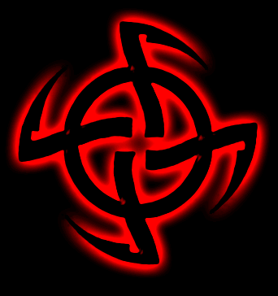

ORDER OF THE NINE ANGLES
«Орден Девяти Углов является уникальной и таинственной организацией, чья концепция Традиционного Сатанизма открыла абсолютно новый путь всем ищущим оккультного знания. Позиция ONA относительно человеческого жертвоприношения и национал-социализма много раз ставила нас в центр противоречий, вызывая обвинения в "ереси" со стороны так называемых "сатанистов"...» – именно так позиционируют ONA его последователи.
Действительно, данный орден является если и не уникальным, то таинственным в полной мере. Наши попытки связаться с этой организацией по Интернет результата не дали. Однако в данной статье мы старались изложить некоторые аспекты их деятельности, предоставляя право делать выводы самому читателю.
Путь Сатанизма
«Путь Сатанизма – это путь освобождения; внутренне и внешнее. Это желание познавать основанное на опыте, а не на вере. Желание быть гордым и торжествующим, наслаждаться жизнью и использовать возможности, которые предлагает жизнь. Другими словами, действительно жить полностью и расширять границы существования: достигать, преуспевать, превосходить. Устанавливать стандарты, примеры для других, а не следовать за кем-то. Таким образом, вследствие «человеческой природы», Сатанизм подходит меньшинству; тем немногим, кто может действительно не повиноваться и идти против общепринятых норм. Ибо это есть фундаментальный принцип Сатанизма, что каждый индивидуальный Сатанист находит его или ее собственные пределы и, таким образом, живет и, если необходимо, умирает по своей собственной морали и этике. То есть, Сатанист не принимает стандартов, морали и этических кодексов. Он создает свои собственные стандарты и живет по своей собственной морали, какой бы темной или злой она не показалась другим или «обществу». Это означает, что Сатанисты аморальны в обыденном смысле. Они отвергают все ограничения, кроме тех, которые импонируют им самим».(1)
Сатанизм (13)
- Сатанизм – это поиск самопреодоления, вовлекающий реальную опасность, реальные испытания и требующий реальной храбрости. Это уводит ваше тело за его физические пределы выносливости. Это подразумевает реальные действия без поддержки друзей, товарищей, возлюбленных, отношений или чего-либо еще. Это означает принятие вызова – физического, душевного, интеллектуального и торжество исключительно за счет собственных усилий. Это означает триумф чистой индивидуальной воли и желания.
- Частично Сатанизм – это внутренний поиск, исследование «скрытого» (и открытого) аспекта сознания: открытие тьмы внутри и вне индивидуального psyche. Это вовлекает магические деяния типа ритуалов. Однако эта магия лишь средство, а не цель.
- Сатанизм вовлекает испытания: физические и магические. Одни триумфуют; другие терпят неудачу. [Одно из таких испытаний – Ритуал Степени Внутреннего Адепта – где кандидат живет один в изоляции три месяца, лишенный всего кроме самых необходимых потребностей физического выживания .]
- Сатанизм требует практического преодоления всех моральных пределов и затем господство над чувствами, желаниями, удовольствиями, ужасами, болью и т. д., которые они подразумевают.
- Сатанизм вовлекает индивидуальный вызов любому раболепию. Сатанист только принимает руководство и отказывается, чтобы над ним кто-то доминировал или запугивал его. Это руководство к практическому опыту, и именно этим опытом новичок изучает и развивает подлинный Сатанинский характер.
- Сатанизм вовлекает жертвоприношение, это необходимое испытание характера [см. подробности в «Сатанизм, Жертвоприношение и Преступление – Сатанинская Истина», и «Сатанизм – Зловещая Тень»].
- Сатанизм – это средство, метод или путь, и цель его состоит в том, чтобы произвести определенный тип личности: следующую стадию нашей эволюции как вида. Сатанизм является, таким образом, выражением эволюционного изменения на индивидуальном уровне и на уровне общества и истории. Личности, созданные таким образом, часто вдохновляют в лежащем на спине большинстве некоторый ужас / благоговение / восхищение / страх / зависть.
- Сатанизм элитарен и не идет на компромисс – его испытания, методы и строящие характер опыты серьезны и никогда не будут сделаны более легкими, чтобы они были приемлемыми для большего количества людей.
- Сатанизм эзотеричен по своей природе и намерению: это является «секретным» путем, на основании его методов и т.д. И, вероятно, он не будет подходящим для большинства еще много, много столетий.
Восприятие Сатаны и понятие «темных богов»
«Акаузальное – это царство Темных богов, и эти существа не являются образными символами для щекотания сознания или просто частью psyche, которое может быть превзойдено и отвергнуто с помощью каких-то «сил света». Скорее они существуют независимо от нашего сознания, но все же природа акаузального такова, что они являются также частью чего-то дремлющего в нас…».(3)
«Тот, кто хочет узнать о Темных богах, должен пройти через Бездну (опыт преодоления «противоположностей»), чтобы понять, чем по своей сути являются эти энергии (т.е., что они просто СУЩЕСТВУЮТ), сохранив при этом рассудок и цельность». (4)
«Сатана – это не просто форма, которую можно рассматривать, как вышедшую из моды и заменить другим божеством по личному выбору. Эта форма ЯВЛЯЕТСЯ непосредственной сущностью…это – эзотерическая реальность». (5)
«Для нас Сатана и архетип/символ нашего вызова и нечто реальное – представление того, что мы описываем как акаузальное…мы понимаем темные силы не просто как часть нашей души (как делают современные так называемые «сатанинские» группы), они…вне нас как отдельные сущности, они вне нашего сознательного контроля, пока мы не станем частью их». (2)
«В начальных, общедоступных понятиях…понимание Сатаны как одного из темных богов (или даже Отца темных богов), дальнейшее понимание темных богов, как хаотических, первородных, зловещих сущностей, которые вызывают, порождают изменение и развитие». (6)
«Они таятся за порогом бытия. Расправляя свои перья и навостряя глаза, издавая странные звуки для тех, у кого есть уши, чтобы слышать и разум, чтобы знать. Они ждут, пребывая в пространстве между мирами, на перекрестке встречи измерений. Они – разрушители…». (4)
Цели (7)
- Увеличить число истинных Адептов и Мастеров, ведя индивидуумов по пути к Адептству и далее.
- Сделать путь к Адепству и дальше (Семикратный Путь) более широко доступным, дающим возможность любому обладающему необходимым желанием добиться конечной цели.
- Расширить эзотерическое знание и техники, т.е.
- Созидательно расширить наше эзотерическое знание и понимание и увеличить таким образом сознание каждого вида;
- Развить новые техники, которые сделают новое знание и понимание полезным для следующих по Семикратному Пути;
- Осуществить это знание на практике, вызывая изменение в обществе;
Сферы, наиболее важные в ближайшем будущем: - Искусство (музыка, кинематограф);
- Создание эзотерической общины;
- Развитие абстрактного символического языка (Звездная Игра).
- Осуществить зловещую стратегию – т.е. вызвать акаузальное (или темные силы) через проводники – таким образом изменить эволюцию. Одна ближайшая цель – вызвать акаузальные энергии, создание Нового Эона, и затем новой, высшей цивилизации.
Ритуалы ONA
Хочется отметить два момента ритуалов ONA, а именно использование молитв «сатанинский Отче наш» и «Сатанинское убеждение». (!!! Ред.)
«Отче наш, сущий на небесах. Да святится имя твое на небесах. Как это есть на земле. Дай нам этот день нашего экстаза. И предай нас злу и искушению. Ибо мы – твое царство на эоны и эоны». (8)
«Сатанинское убеждение»: «Я верю лишь в одного князя, Сатану, кто правит всей Землей. И в один Закон, который торжествует над всем. Я верю в один Храм. Наш храм – Сатане. И в одно Слово, которое торжествует над всем, Слово экстаза. И я верю в закон Эона, который есть жертвоприношение и позволение крови. Для которого я не проливаю слез. Так как я воздаю хвалу моему Князю, несущему огонь. И предвкушаю Его царствование и Его вожделение». (8)
Основные ритуалы:
- Черная месса (в нескольких вариантах, учтена также нетрадиционная сексуальная ориентация).
- Церемония рождения (посвящение и наречение именем новорожденного).
- Умирающее время (похороны члена ONA).
- Брак.
- Инициация.
- Освящение храма.
- Смертельный ритуал (принудительное жертвоприношение и магическое убийство врага).
- Церемония отзыва с жертвенным заключением (жертвоприношение добровольное или принудительное).
- Зловещий призыв (призыв Темных богов).
- Прометеевская служба (ежедневный ритуал).
- Месса ереси (ритуал поклонения свастике «Адольф Гитлер был послан нашими Богами, чтобы вести нас к величию…». (7)).
- Synestry – «зловещая церемония» (накопление энергии).
- Ритуал Девяти углов (открытие врат для Темных богов).
- Работа с Темными тропами (взаимодействие с Темными богами).
Человеческое жертвоприношение
«В подлинном сатанизме человеческое жертвоприношение принято и действительно необходимо. В прежние времена он вовлекал и животное, и человеческое жертвоприношение. Однако, сегодня используется только человеческое жертвоприношение». (9)
«Жертва расценивается как дар Князю Тьмы. Этот дар, однако, иногда предлагается Темной Богине, невесте нашего Князя. Человеческое жертвоприношение – мощная магия. Ритуальная смерть индивидуума делает две вещи: это освобождает энергию, которая может быть направлена или запасена, например, в кристалле, и это привлекает темные силы или сущности». (10)
«Акт помогает саморазвитию участников и способствует эволюции, усиливая жизни индивидуумов». (11)
21 Сатанинский Пункт (12)
- Не почитай жалость или слабость, поскольку они – скверна, которая делает сильного больным.
- Испытывай всегда свою силу, ибо в этом кроется успех.
- Ищи счастье в победе – но никогда в мире.
- Наслаждайся коротким отдыхом, лучше, чем долгим.
- Приходи как жнец, ибо так ты будешь сеять.
- Никогда не люби что-либо так сильно, что не сможешь смотреть, как это умирает.
- Строй не на песке, а на скале, и строй не на вчера или сегодня, а на все времена.
- Стремись всегда к большему, ибо завоевание никогда не свершится.
- Умри, но не подчиняйся.
- Делай не произведения искусства, но мечи смерти, ибо это величайшее искусство.
- Учись преодолевать себя, так ты сможешь преодолеть все.
- Кровь живущих лучшее удобрение для семян нового.
- Тот, кто стоит на вершине высочайшей пирамиды черепов, видит дальше всего.
- Не отвергай любовь, но обращайся с ней как с самозванцем и будь всегда справедлив.
- Все, что велико – построено на скорби.
- Стремись не только вперед, но и вверх для величия в самом высоком.
- Приходи как свежий, сильный ветер, который, сокрушая, творит.
- Пусть любовь к жизни будет целью, но пусть твоей самой высокой целью будет величие.
- Ничто не красиво, кроме человека: но наиболее красивое из всего – женщина.
- Отвергни все иллюзии и ложь, поскольку они препятствие сильному.
- Что не убивает, делает сильнее.
Резюме
Каждый, кто имеет принадлежность к Темному пути, может увидеть те моменты в учении ONA, которые можно назвать несомненными, действительными по отношению к опыту, получаемому им при прохождении Пути. Этот опыт является общим для всех истинно темных, ибо отражает реальные законы взаимоотношений индивидуума со Тьмой, и не является сакральной собственностью той или иной сатанинской организации.
Именно поэтому мы не считаем для себя возможным подвергать тотальной критике учение ONA, равно как и любой другой группы, в которой Тьма проявилась в той либо иной степени. В таком случае мы бы отвергали принадлежащее к ценностям Тьмы. Всегда следует помнить, что Тьма проявляется во множестве учений и философских систем в той степени, в которой позволяет Ей искусство, честность, грамотность, зрелость и бескорыстная целеустремлённость проводящих Тьму.
В учении ONA присутствуют как явные элементы PR, направленные на привлечение личностей любого мировоззрения, а именно: гедонизм, национал-социализм, ритуалы, приспособленные под интересы сексуальных меньшинств и проч., так и идеи метафизического порядка.
Поэтому мы призываем лишь к одному: умению анализировать и соотносить идеи, претендующие на звание темных, сообразно личному опыту и, главное, иметь этот свой личный опыт.
Литература
- Сатанизм – введение для будущих последователей, Order of Nine Angles
- Левосторонний путь, введение в традиционный сатанизм, Order of Nine Angles
- Акаузальное существование, Order of Nine Angles, 1991г.
- Темные боги, Order of Nine Angles
- Храм 88, Order of Nine Angles
- Тьма – мой друг: истинное значение Зловещего Пути, Order of Nine Angles
- Цели Order of Nine Angles, Order of Nine Angles
- Черная Книга Сатаны 1, Order of Nine Angles
- Сатанизм, жертвоприношение и преступление, Order of Nine Angles
- Дар Князю: руководство к человеческому жертвоприношению, Order of Nine Angles 1984г. (пересмотрено в 1994г.)
- Отбор: руководство к жертвоприношению, Order of Nine Angles, 1990 г.
- 21 сатанинский пункт, Order of Nine Angles
- HYSTERON PROTERON. Внутреннее Учение O.N.A. Anton Long & Order of Nine Angles, 1992 г
В заключении мы предлагаем фрагменты из интервью с V. Thornian из «13 вопросов для V. Thornian (ONA)».
1. Вы можете объяснить значение и определение слова "Сатана" с перспективы ONA?
Сатана для ONA – это предвестник изменения внутри индивидуума и цивилизации в целом. Сатана или Сатанас является образом, в который мы вкладываем то, что не может содержаться в любом, чисто каузальном понимании. Сатана – это представление или способ идентификации чего-то очень реального, часть того первичного хаоса, который находится по ту сторону воспринимаемых нами измерений. Таким образом, Сатана – это те силы сознания и космоса, которые мы стремимся вызвать на поверхность, породить изменения. Это вовлекает конфронтацию с внутренней Тенью (ведущую к возможному синтезу этих темных энергий в индивидуальном сознании, шаг к балансу) и присутствие реальной Тьмы в текущем социальном климате – Хаос. Упрощенно, Сатана – это врата к тому, что лежит по ту сторону, к акаузальному, каузальное представление акаузального, через которое мы увеличиваем количество акаузальной энергии, присутствующей на Земле, через практики и ритуалы Зловещей Традиции. Это важно, так как вторжение акаузального в наш мир приносит изменение, которое, в конечном счете, необходимо, чтобы прогрессировать, достигнуть следующего шага в человеческой эволюции в крупном масштабе.
2. Вы можете описать, насколько желаете или сможете, начало ONA?
ONA был сформирован из нескольких различных рабочих групп в 1960-х. Решение объединить группы в одну было принято тогдашней Великой Госпожой. В то время некоторые из групп имели доступ только к части традиции или вариациям этой традиции. Антон Лонг был инициирован этой Великой Госпожой, и в итоге был выбран преемником традиции. Великая Госпожа затем исчезла, оставив Антона Лонга с огромным грузом на его плечах. Но преемник традиции никогда не выбирается в поспешности и кем-то, кто не достиг уровня Великой Госпожи или Гранд Мастера (эти степени достигаются годами тяжелой борьбы, а не являются просто титулами, данными для развлечения или чтобы удовлетворить мелкие эго тех, кто себе их присвоил).
Гранд Мастер или Великая Госпожа, конечно, имеют такой уровень понимания, чтобы сделать соответствующее решение и никогда не оглядываться назад. И она была права с выбором А. Лонга, поскольку он, в конечном счете, работал над своим путем через трудные испытания и приблизительно после 25 лет сам стал Гранд Мастером. Это такой уровень, который достигается возможно лишь 1-2 раза в столетие. Традиция, которую он получил от его Госпожи, была искажена, но содержала основную позицию или дух, который является основой Сатанизма. Некоторые из аспектов Традиции, переданной А. Лонгу, были пения, некоторые ритуалы (включая жертвоприношение), роли понимания (которые сами по себе иллюстрируют, чем является подлинный Сатанизм), требования к происхождению, ритуалы степеней, мифы о темных богах и т.д.
Позже А. Лонг через собственный опыт и борьбу, обозначенную тем, что сегодня мы знаем как Семикратный Путь, внес такие усовершенствования, как Звездная Игра и Эоническое. Также он использовал другие средства, такие как Deofel Quartet, чтобы вызвать понимание новых инициированных и создает структуру, которая в течение столетий будет расширяться пониманием новых инициированных, но никогда не сделается более легкой.
Где-то в начале 1990-х Christos Beest стал внешним представителем Ордена и управлял журналом ONA "Fernir", всеми общественными, деловыми отношениями и обучал новых инициированных и продолжал свой поиск по Семикратному Пути, также сделав несколько вкладов в традицию. Он исследовал новые способы представления акаузального через музыку и художественные работы, разработал Зловещее Таро, сочинил и записал "Ритуал Самосожжения" (Self-Immolation Rite) и другую музыку, расширил технику зловещего пения и весьма продвинулся в понимании Сатанизма, что подтвердил в крайне провокационной манере, таким образом, через свой собственный опыт дав направление стратегиям ONA. Christos удалился от общественного спектра, и сейчас я имею честь быть внешним представителем Ордена в это интересное время.
Прямо сейчас Зловещая Традиция переживает новую стадию, сосредоточенную в Америке среди инициированных. Традиция может пониматься как обладающая собственной жизнью, являющаяся сосудом для воли космоса, и эта новая стадия действительно не может быть выражена в словах. Таким образом, вы имеете краткую (очень краткую) историю ONA с перспективы общественности. Что здесь не выражено, это то, как инициированные традиции продолжают осуществлять Зловещую стратегию, чтобы привести мир к тому, что неадекватно названо Новым Эоном (см. Эонические работы, Зловещая Диалектика и т.д.)
3. Как долго существует ONA?
С начала 1960-х как коллективный Орден. Происхождение самой традиции, как считается, передаваемой от Мастера к Инициированному в течение столетий, принадлежит Альбиону (вероятно, через различные формы).
4. Чему подобна структура и работа ONA?
Семикратный Путь предназначен, чтобы Инициированные следовали ему, главным образом, в одиночку. Таким образом, структура ONA существует на уровне новых Инициированных, только чтобы давать руководство. Каждый Инициированный, если допускается в ONA, получит контакт в Ордене и через него - руководство и совет. Следовать этому руководству и совету или нет - дело Инициированного. Мы просто предлагаем понимание тех, кто уже прошел этот путь и, таким образом, более опытен. Вне этого, ONA работает под системой ячеек, поскольку это наиболее эффективное средство осуществления нашей стратегии. Кроме этого, большинство работает в одиночку, следуя их собственной Судьбе, и каждый выбирает различные средства для достижения определенных коллективных целей.
5. Вы согласны с утверждением ЛаВея о том, что Сатанистами рождаются, а не становятся? Если нет, то почему?
Нет, я рассматриваю такое утверждение как показатель недостатка потенциала, свойственного тому, что называется "современным Сатанизмом".
Определенно Сатанистами становятся, а не рождаются. Подлинный сатанинский характер – это результат опыта, крови и грязи на ваших руках, борьбы за достижение важных целей, учения на неудачах и потере лица, подвигах и преследования абсолютного превосходства во всем, что мы делаем. Те, кто верят, что они были просто "рождены сатанистами", не имеют никакого реального понимания, чем является Сатанизм. Скорее, над ними доминирует их собственное эго и лень, они являются антитезой Сатанизма. Это хороший показатель того, что "американский Сатанизм" истощился. Вместо благородного преследования превосходства и самосовершенствования через тяжелую борьбу, "американский сатанизм" в значительной степени показывает свою претенциозность и никогда не избегает эго.
Это то, что мы можем назвать "первой стадией" Сатанизма, вознаграждение эго, богохульство и т.д. играют большую роль в катарсисе и самопонимании. Однако в то время, как для настоящего Сатаниста эта первая стадия длится недолго, Церковь Сатаны никогда не превосходила этого, никогда не двигалась к тому, что является действительно важным, никогда не продвигалась к следующей стадии.
Подлинный Сатанизм имеет размах, который выходит далеко за рамки эго его Инициированных. Можно предположить, что те, кто манипулируются своим эго, вряд ли даже начали прикасаться к раскрытию того, чем они, в сущности, являются. Единственный случай, в котором вышеприведенное утверждение имеет какой-то смысл, это тот факт, что все мы рождаемся с потенциалом.
Сатанизм, в конечном счете, это выполнение этого потенциала, но нет ничего, что сделает это за вас, и, конечно же, это не произойдет само по себе. Просто верить в то, что вы "рождены сатанистом", это значит освободиться от обязанности действительно им быть и показывать сатанинский характер. Это не есть то, что большинство хотело бы услышать.
Я использовал определение "американский сатанизм", чтобы описать истолкование сатанизма такими группами, как Церковь Сатаны и Храм Сета, которые упростили Сатанизм и превратили его в антизападную "философию". Однако сейчас такое определение больше не соответствует истине из-за множества американских Инициированных Зловещей Традиции, которые меняют все это.
6. Вы действительно верите, что магическое достижение подразумевает "потерю образа себя"? Не является ли это отношение парадоксальным, т.е. усиленное эго, сосуществующее с внутренней личностью гармонизированной с акаузальными силами?
Магия подразумевает потерю образа себя, потому что Адепт работает над надличностными целями, которые находятся в соответствии с естественным потоком космической воли, которой каузальный "образ себя", в конечном счете, принесен в жертву. И также потому что, прогрессируя по зловещему пути, они в свою очередь впускают в свое сознание и в мир все больше и больше акаузального, пока инициированный/адепт не пересечет Бездну, что означает разрушение этого образа себя.
Это разрушение (и удаление проекций, перемещение вне противоположностей и т.д.), это когда вещи понимаются согласно их внутренней сущности, без помощи форм или образов. Архетипы, формы, образы и т.д. полезны в начале, но отбрасываются при пересечении Бездны, т.к. они лишь каузальное представление акаузального, которое по своей сути является тем, что не может быть полностью в понятиях каузального.
11. Вы можете описать роль национал-социализма в стратегии ONA?
Национал-социализм – это средство, которым мир может быть изменен к лучшему и, таким образом, ключевой элемент к эонической стратегии. Это хранит дух Запада в его наиболее развитом состоянии в его наиболее развитом состоянии и несет большой потенциал для человеческого развития и установления того, что было названо Новым Эоном.
Должно быть отмечено, в свете противоречий, которые всегда следуют, что Сатанизм идет намного дальше таких форм и того, чего они могут достигнуть в тех будущих формах, которые в настоящее время даже нельзя предположить. Такие формы – лишь средства, а в этом случае, средства, которые обладают торжествующим фаустовским/арийским духом, и бросает это навстречу судьбе.
12. Какие связи (если они есть)существуют у ONA с современными национал-социалистическими группами?
Никаких.
The Order of Nine Angles P O Box 105 Shrewsbury, Shropshire SY1 2WS England |